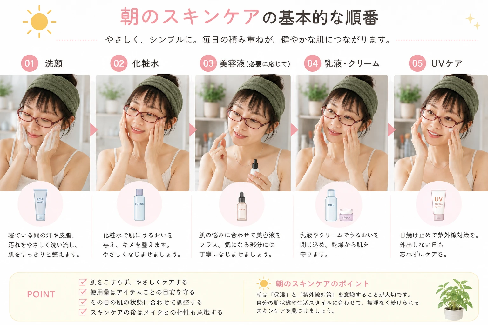
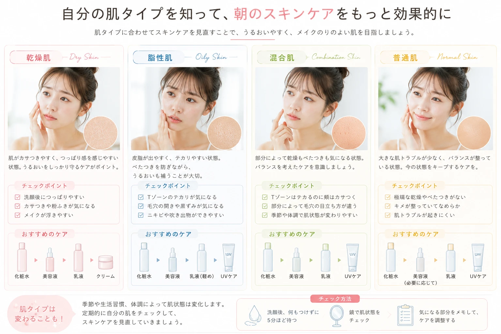
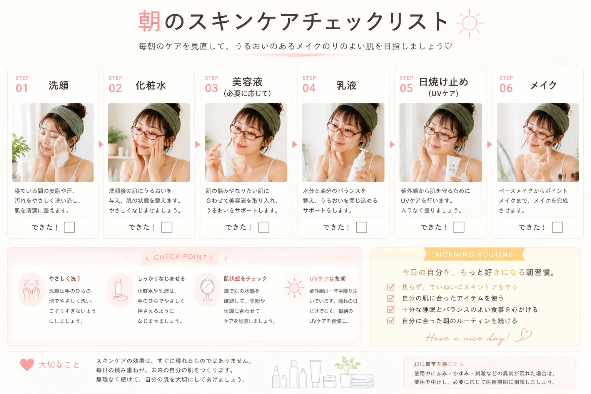

朝は時間がなく、 スキンケアを簡単に済ませてしまう人も 少なくありません。
しかし朝の肌は、 寝ている間の皮脂や汗などが付着しているため、 肌の状態を整えてから メイクや日中のケアを始めることが大切です。
朝のスキンケアは、 「洗う → うるおす → 守る」 という流れを基本にすると 覚えやすくなります。
この記事で分かること
朝のスキンケアが大切な理由
朝のスキンケアの基本的な順番
洗顔・化粧水・乳液のポイント
忙しい朝でも続けやすい方法
朝のUVケアの考え方
目次
朝のスキンケアが必要な理由
朝のスキンケアは、 肌を清潔に整えて、 日中のメイクや外的環境に備えるための 基本的なケアです。
寝ている間にも汗や皮脂は分泌されるため、 朝は肌の状態を確認しながら 洗顔や保湿を行いましょう。
朝の肌を整えてメイクしやすくする
朝に保湿を行って肌を整えておくことで、 メイク前の肌を準備しやすくなります。 乾燥が気になる場合は、 化粧水や乳液などを使って 肌の状態に合わせてケアしましょう。
日中の紫外線対策も忘れずに
朝のスキンケアでは、 保湿だけでなく 日中の紫外線を考えたケアも大切です。 外出する日は、 日焼け止めなどを使用して 紫外線対策を行いましょう。
朝は「整える＋守る」がポイント
朝のスキンケアは、 肌を整えるだけで終わりではありません。 保湿した後は、 日中の環境に合わせた UV対策まで意識しましょう。
朝のスキンケア基本の順番
朝のスキンケアは、 基本的には次のような流れで行います。
洗顔
朝の肌の状態に合わせて 洗顔を行います。
化粧水
化粧水で肌を整え、 うるおいを与えます。
乳液・クリーム
肌の状態に合わせて 乳液やクリームを使います。
UVケア
日中の紫外線対策として 日焼け止めなどを使用します。

肌の状態に合わせて洗顔する
化粧水で肌を整える
乳液やクリームで保湿する
日中はUV対策を意識する
朝洗顔のポイント
朝は、寝ている間に付着した汗や皮脂などを 洗い流して、肌を整えることから始めます。 ただし、肌の状態や使用する洗顔料によって 洗い方は異なるため、 自分の肌に合わせてケアすることが大切です。
ゴシゴシこすらない
洗顔するときは、 肌を強くこすらないようにしましょう。 泡や洗顔料を使う場合は、 商品の使用方法を確認しながら やさしく洗うことを意識します。
洗顔後は時間を空けすぎない
洗顔後はそのままにせず、 肌の状態に合わせて保湿ケアを行いましょう。 朝の準備時間が限られている場合も、 洗顔から保湿までを 一連の流れとして習慣にすると続けやすくなります。
肌を強くこすらない
洗顔料は使用方法を確認する
洗顔後は保湿ケアにつなげる
朝の洗顔は肌の状態を見ながら
朝の肌は人によって状態が異なります。 乾燥やベタつきなどが気になる場合も、 その日の肌の状態を確認しながら 無理のないケアを行いましょう。
化粧水で肌を整える
洗顔後は、 化粧水などを使って肌を整えます。 朝はこの後にメイクをすることも多いため、 使用感や量なども考えながら 自分に合ったケアを取り入れましょう。
手のひらでやさしくなじませる
化粧水を使用するときは、 肌を強くこすらないように やさしくなじませることを意識しましょう。 商品ごとに適量が設定されている場合は、 パッケージなどの使用方法を確認してください。
メイク前は使いすぎにも注意
朝はスキンケアの後に メイクをすることが多いため、 スキンケアアイテムの量や使用感によっては メイクの仕上がりに影響する場合があります。 自分の肌やメイクに合わせて 使用量を調整しましょう。
朝の化粧水は「続けやすさ」も大切
毎日の朝に無理なく続けられるよう、 自分が使いやすいテクスチャーや 使用感のアイテムを選ぶのもポイントです。
乳液・クリームでうるおいを守る
化粧水などで肌を整えた後は、 肌の状態に合わせて 乳液やクリームなどを使います。 朝はメイク前ということも考えて、 使用量やテクスチャーを選びましょう。
乾燥が気になる部分は丁寧に
顔全体が同じ状態とは限りません。 乾燥が気になる部分がある場合は、 使用しているアイテムの説明を確認しながら、 その部分を丁寧にケアしましょう。
ベタつきが気になる場合は使用量を確認
朝のスキンケアでベタつきが気になる場合は、 アイテムの使用量や重ねる順番を確認してみましょう。 商品の推奨使用量を基本にしながら、 自分の肌やメイクとの相性を見て 調整することがポイントです。
肌の状態に合わせて保湿する
乾燥が気になる部分を確認する
メイク前は使用感も意識する
朝のUVケア
朝のスキンケアでは、 保湿だけでなく 日中の紫外線対策も意識しましょう。 外出する日だけでなく、 日中に紫外線を浴びる可能性がある場合は、 日焼け止めなどを活用して対策します。
日焼け止めは使用方法を確認
日焼け止めは、 商品によって使用方法や使用量が異なります。 パッケージなどを確認して、 使用方法に沿って使いましょう。
外出先では塗り直しも意識する
長時間屋外で過ごす場合などは、 日焼け止めの使用方法を確認し、 必要に応じて塗り直すことも大切です。
UVケアまでが朝の美容習慣
朝のスキンケアを 「保湿まで」と考えず、 日中の紫外線対策まで含めて 一日の美容習慣として考えてみましょう。
外出する日はUVケアを意識する
日焼け止めの使用方法を確認する
長時間屋外にいる場合は塗り直しを検討する
肌の状態に合わせた朝のスキンケア
朝のスキンケアは、 すべての人が同じ方法をする必要はありません。 その日の肌の状態を確認しながら、 使用するアイテムや量を調整しましょう。
乾燥が気になるとき
洗顔や保湿の方法を見直し、 肌の状態に合わせて うるおいを意識したケアを行いましょう。
ベタつきが気になるとき
洗いすぎに注意しながら、 スキンケアアイテムの使用量や 使用感を見直してみましょう。
部分的に状態が違うとき
顔全体を同じようにケアするのではなく、 乾燥やベタつきなど、 部位ごとの状態を確認しましょう。
特に気になる部分がないとき
現在のケアを基本にしながら、 季節や生活環境による変化も 確認していきましょう。

季節によってもケアを見直す
夏と冬では、 汗や乾燥など肌を取り巻く環境が変わります。 一年中まったく同じケアを続けるのではなく、 季節やその日の肌の状態を見ながら 使用感などを見直してみましょう。
忙しい朝の時短スキンケア
朝は着替えやヘアセット、メイクなど、 やることが多くてスキンケアに 時間をかけられないこともあります。 そんなときは、 すべての工程を無理に増やすのではなく、 毎日続けやすい方法を考えてみましょう。

スキンケア用品をまとめておく
朝に使うアイテムを 洗面台などの使いやすい場所にまとめておくと、 毎朝探す時間を減らせます。 化粧水、乳液、日焼け止めなど、 自分が朝に使うアイテムを 一か所にまとめておくと便利です。
洗顔からUVケアまでの流れを決める
朝のスキンケアの順番を 毎日ある程度決めておくと、 忙しい日でも迷いにくくなります。
洗顔
肌の状態に合わせて洗顔。
保湿
化粧水などで肌を整える。
乳液・クリーム
肌の状態に合わせて保湿する。
UVケア
日中の紫外線対策を行う。
「短時間でも毎日続ける」を意識
朝のスキンケアは、 時間をかけることだけが大切なのではありません。 自分の生活リズムに合わせて、 無理なく続けられる方法を見つけましょう。
メイク前のスキンケアで意識したいこと
朝はスキンケアの後に メイクをすることが多いため、 スキンケアとメイクの相性も 意識してみましょう。
スキンケアアイテムを重ねすぎない
朝はたくさんのアイテムを使えばよいとは限りません。 肌の状態や使用するアイテムを確認しながら、 自分に必要なケアを組み立てていきましょう。
メイク前は肌になじむ時間も考える
スキンケア直後にすぐメイクを始めるのではなく、 使用するアイテムの状態や肌のなじみ具合を 確認しながら次の工程に進みましょう。
必要以上にアイテムを重ねない
使用量は商品の表示を確認する
メイクとの相性も確認する
肌になじんだ状態を確認してからメイクする
朝のスキンケアで気をつけたいこと
朝のスキンケアは、 毎日行うものだからこそ、 肌に負担をかけないことや 自分の肌状態を確認することが大切です。
肌を強くこすらない
洗顔やスキンケアの際に、 肌を強くこするのは避けましょう。 やさしく扱うことを意識します。
肌の状態を無視しない
毎日同じ状態とは限らないため、 乾燥やベタつきなど、 その日の肌の変化も確認しましょう。
アイテムを使いすぎない
多くのアイテムを使えばよいとは限りません。 商品の使用方法を確認しながら、 自分に必要なケアを選びましょう。
UVケアを忘れない
日中に紫外線を浴びる場合は、 日焼け止めなどを使って 紫外線対策を行いましょう。

肌に異常を感じたら無理をしない
スキンケアをして肌に異常を感じた場合は、 使用を続けるのではなく、 商品の使用方法を確認しましょう。 気になる症状が続く場合は、 医療機関などに相談してください。
朝のスキンケアを習慣にするコツ
スキンケアは一度だけ頑張るよりも、 毎日無理なく続けられることが大切です。 朝の生活の中に自然に組み込んでいきましょう。
置き場所を固定する
朝に使うアイテムを いつも同じ場所に置きます。
順番を固定する
洗顔からUVケアまでの流れを ある程度決めておきます。
朝の時間に合わせる
自分が無理なくできる スキンケアを考えます。
季節ごとに見直す
肌の状態や生活環境が変わったら、 ケア方法も見直します。
MORNING BEAUTY TIP
「完璧な朝のスキンケア」よりも、 自分の生活の中で無理なく続けられる スキンケアを見つけることがポイントです。
朝のスキンケアをシンプルに見直そう
朝のスキンケアは、 洗顔から保湿、UVケアまでの流れを 自分の肌や生活スタイルに合わせて 整えることがポイントです。
忙しい日はすべてを完璧にしようとせず、 毎日続けやすい方法を考えてみましょう。 肌の状態は季節や生活環境によっても変わるため、 その日の状態を確認しながら ケアを調整することも大切です。
朝のスキンケア CHECK LIST
-
✓
朝の肌の状態を確認する
-
✓
肌を強くこすらない
-
✓
洗顔後に保湿する
-
✓
肌の状態に合わせて乳液・クリームを使う
-
✓
日中の紫外線対策を意識する
-
✓
無理なく続けられる方法を選ぶ
朝のスキンケア よくある質問
朝は必ず洗顔料を使ったほうがいい？
朝の洗顔方法は、 肌の状態や使用する洗顔料などによって異なります。 乾燥やベタつきなど、 自分の肌の状態を確認しながら 使用方法に沿ってケアしましょう。
朝も化粧水を使ったほうがいい？
朝のスキンケアでは、 洗顔後に化粧水などを使って 肌を整える方法があります。 肌の状態や使用するアイテムに合わせて、 自分に合ったケアを行いましょう。
朝も乳液やクリームは必要？
肌の状態に合わせて、 乳液やクリームなどの 保湿アイテムを取り入れましょう。 朝はその後にメイクをすることもあるため、 使用感や量なども考慮すると 続けやすくなります。
朝のスキンケアで日焼け止めは必要？
日中に紫外線を浴びる場合は、 日焼け止めなどを使用して 紫外線対策を行いましょう。 商品ごとに使用方法や使用量が異なるため、 パッケージなどを確認して使用してください。
忙しい朝はどうすればいい？
朝に使うアイテムをまとめておいたり、 洗顔からUVケアまでの順番を決めておいたりすると、 毎日のケアをスムーズに行いやすくなります。 無理なく続けられる方法を選びましょう。
朝のスキンケア後すぐにメイクしていい？
使用するアイテムの使用感や 肌へのなじみ具合を確認してから メイクを始めるとよいでしょう。 商品の使用方法を確認し、 自分のメイクとの相性も見ながら 調整してください。
朝のスキンケアを毎日の習慣に
朝のスキンケアは、 洗顔・保湿・UVケアという 基本の流れを意識するだけでも、 毎日の美容習慣を整理しやすくなります。
大切なのは、 すべてを完璧にこなすことではありません。 肌の状態や季節、 その日の予定に合わせながら、 自分にとって無理なく続けられる スキンケアを見つけていきましょう。
朝のスキンケア 5つの基本
-
01
肌の状態を確認する
-
02
肌をやさしく洗う
-
03
化粧水などで肌を整える
-
04
乳液・クリームなどで保湿する
-
05
日中の紫外線対策を行う
美容をもっと、 自分らしく。
メイク・スキンケア・ボディケア・ ヘアケア・ファッション。 毎日の美容をもっと楽しむための記事を Pro Pocket Beautyでチェック。
最新記事を見る →